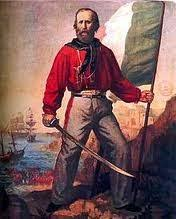

ג'וזפה גריבלדי היה גנרל, פטריוט, מנהיג וגיבור לאומי איטלקי ואחד הדמויות המרכזיות במאבק לאיחודה של איטליה. גריבלדי היה בעד השלטון הרפובליקני ובז דיפלומטיה. הוא סלד ממלכים וחש בחילה אל מול אנשי הדת עקב צביעותם ולא בשל השקפותיו הדתיות. גריבלדי תרם רבות למען איחודה של איטליה בכך שהצליח לכבוש את איטליה הדרומית, ומסר אותה ללא שום תמורה לממלכת נאפולי. השקפת עולמו של גריבלדי, בניגוד למנהיגים אחרים כגון קאבור, הייתה שרק באמצעות מהפכה יהיה ניתן לחולל שינוי משמעותי ולהביא לאיחודה של איטליה.
ברוכים הבאים לטיול המאורגן באיטליה בעקבות ג'וזפה גריבלדי - גיבור לאומי איטלקי
הטיול שלנו מותאם לכל הגילאים וכולל אתרים היסטוריים אשר קשורים לאיחוד איטליה ואטרקציות מהנות לכל המשפחה. בטיול נחשף לסיפורו של גריבלדי במסעו לאיחוד איטליה.
